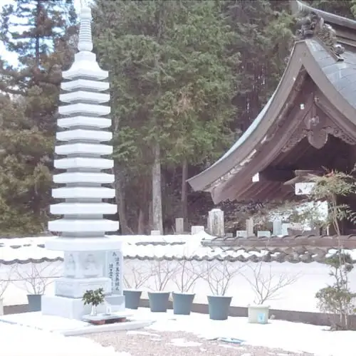
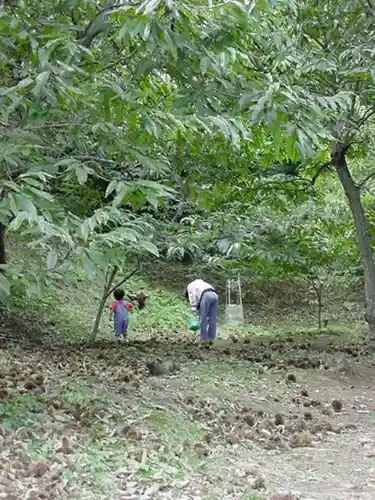
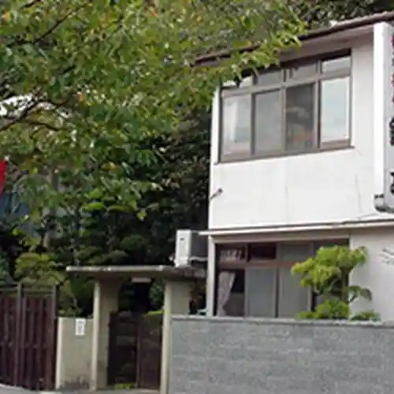

Japan / Osaka / Nose
Nose, Osaka
Nose · Osaka
Nose
Highlighted on the Osaka map.

Sights
Annon Tera
Nose, Osaka · 072-737-0604 · Official / source link
Jo Ruri Shiata
Nose, Osaka · 072-734-3241 · Official / source link
Mizukoshi Kuri Sono
Nose, Osaka · 072-734-0863 · Official / source link

Ichigo Heri Nakagawa
Nose, Osaka · 090-5660-0928 · Official / source link
Kurisu Yamaguri Sono Nishiki Tei
Nose, Osaka · 072-734-0028 · Official / source link

Nose Onsen
Nose, Osaka · 072-734-0041 · Official / source link
Nose Myoken Yama (Seishikimeisho : Muro Yama Shinnyo Tera Sakai Soto Butsudo Nose Myoken Yama)
Nose, Osaka · 072-739-0991 · Official / source link
Shinnyo Tera (Nose)
Nose, Osaka · 072-737-013510 · Official / source link
Shio no Yu Onsen
Nose, Osaka · 072-734-0021 · Official / source link
Nose Tourist Information
Nose, Osaka · 072-731-3737 · Official / source link
Yamabe Shrine
Nose, Osaka · 072-734-0715 · Official / source link
Yusen Tera
Nose, Osaka · 072-737-1440 · Official / source link